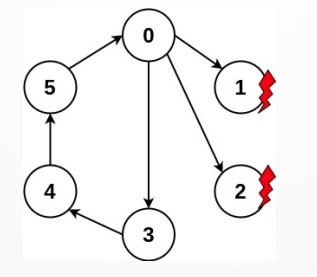

Mariana Moreira dos Santos - mms18@inf.ufpr.br - GRR20186554
Professor: Elias Procópio Duarte Jr.
Última modificação: 15/12/2020
O presente trabalho tem como objetivo a implementação do algoritmo distribuído VRing (Virtual Ring), um algoritmo para determinação do estado de todos os processos do sistema. Neste algoritmo os processos formam um anel virtual (ou anel lógico) que nunca se rompe, para isso cada processo sem falha executa testes sequenciais até encontrar outro processo sem falha. Quando isto ocorre, o processo correto testador obtém as informações de diagnóstico do processo testado sobre todos os processos do sistema exceto aqueles que testou nesta rodada.
Na figura acima é possivel observar que os nodos 1 e 2 encontram-se falhos, já os nodos 0, 3, 4 e 5 encontram-se ativos. Esta imagem demonstra a principal característica do VRing: o anel que nunca se rompe.
A implementação do algoritmo VRing foi realizada em cinco etapas realizadas a partir de um código inicial disponibilizado pelo professor. A seguir estão descritas cada uma das tarefas com suas respectivas descrições, código-fonte e log.
| Código Fonte | Descrição | Log |
|---|---|---|
| task00 | Digitar, compilar e executar o programa exemplo, tempo.c. |
00 |
| task01 | Fazer cada um dos processos testar o seguinte no anel. Implemente o teste com a função status() do SMPL e imprimir (printf) o resultado de cada teste executado. Por exemplo: “O processo i testou o processo j correto no tempo tal.” | 01 |
| task02 | Cada processo correto executa testes até achar outro processo correto. Lembre-se de tratar o caso em que todos os demais processos estão falhos. Imprimir os testes e resultados. |
02 |
| task03 | Cada processo mantém localmente o vetor State[N]. Inicializa o State[N] com -1 (indicando estado “unknown”) para todos os demais processos e 0 para o próprio processo. Nesta tarefa ao executar um teste, o processo atualiza a entrada correspondente no vetor State[N]. Em cada intervalo de testes, mostre o vetor State[N]. |
03 |
| task04 | Quando um processo correto testa outro processo correto obtém as informações de diagnóstico do processo testado sobre todos os processos do sistema exceto aqueles que testou nesta rodada, além do próprio testador. |
04 |
Implemente o algoritmo VRing no ambiente de simulação SMPL, e mostre resultados para diversos valores de N e diversos eventos - um evento em um processo de cada vez, um evento só ocorre depois do evento anterior ser diagnosticado.
Para cada evento mostre claramente o número de testes executados e a latência para completar o diagnóstico do evento. Cada nodo mantém o vetor STATE[0..N-1] de contadores de eventos, inicializado em -1 (estado “unknown”).
Assume-se que os processos são inicializados sem-falha, a entrada correspondente ao próprio processo no vetor STATE[] do testador é setada para zero. Ao descobrir um novo evento em um nodo testado, o testador incrementa a entrada correspondente no vetor STATE[].
Para a transferência de informações de diagnóstico lembre-se da estratégia do VRing: quando um processo sem-falha testa outro processo sem-falha obtém informações sobre os estados de todos os processos que não testou no intervalo de testes corrente.
É importante comparar as entradas correspondentes dos vetores STATE (testador e testado) para saber se o testado tem alguma novidade. Se o valor da entrada for maior no vetor STATE do processo testado, então copia a informação.
Intervalo de Teste (TIME_INTERVAL) é intervalo de tempo constante em que os processos executam testes periodicamente.
O tempo máximo da simulação (MAX_TIME) é o tempo limite para que nossa simulação rode.
Uma rodada de testes (rodada) é definida como o intervalo de tempo em que todo processo sem-falha testou pelo menos um outro processo sem-falha – ou testou todos os demais processos falhos.
O vetor de estados (STATE) de um processo é utilizado para guardar as informações de diagnóstico dos demais processos. Seus possiveis estados são: